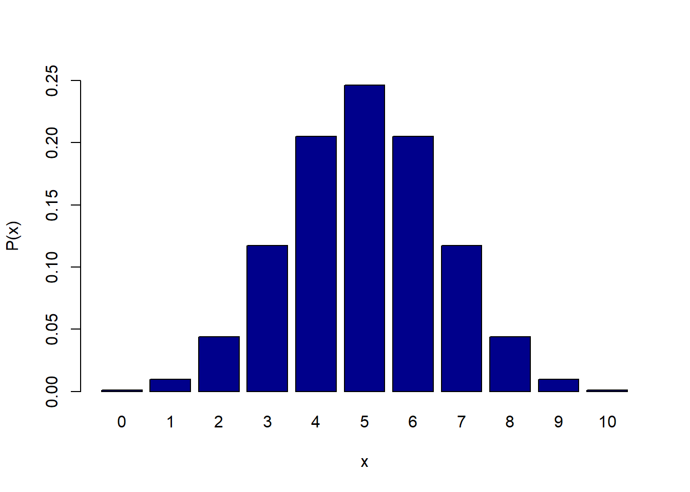

#이항분포 n=10, p=0.5 일 때, 확률분포표 만들기
x <- 0:10
p.x <- dbinom(x, size=10, prob=0.5) # PMF: P(X=k)
table <- data.frame( #벡터들을 **열(column)**로 묶어 표(dataframe) 생성
x = x, #x값(0~10)을 넣음 (열이름="x")
P.Xeqx = round(p.x, 4) #확률값을 소수4째까지 반올림 (열이름="`P(X=x)")
)
print(table) x P.Xeqx
1 0 0.0010
2 1 0.0098
3 2 0.0439
4 3 0.1172
5 4 0.2051
6 5 0.2461
7 6 0.2051
8 7 0.1172
9 8 0.0439
10 9 0.0098
11 10 0.0010# 막대그래프
barplot(p.x,
names.arg = x,
col = "darkblue",
xlab = "x",
ylab = "P(x)",
ylim = c(0, 0.25))